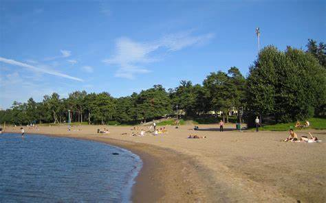
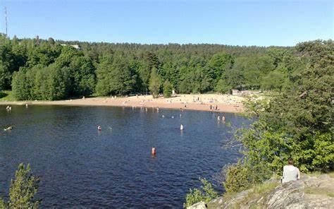
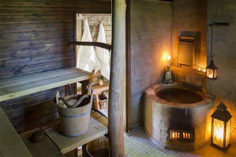
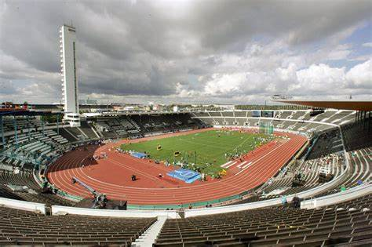
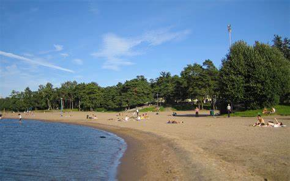
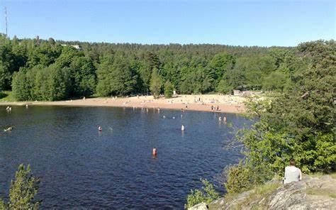
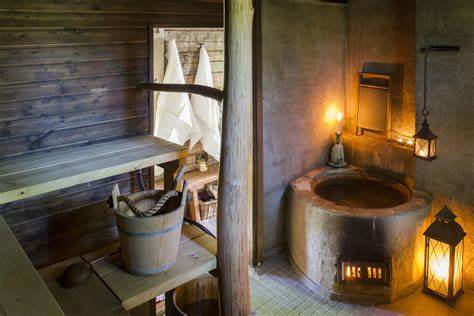
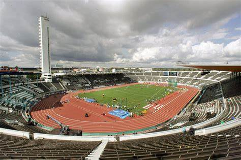

Finland has a variety of restaurants, attractions, and interesting places. In Helsinki, you can find a variety of cafes selling Finnish desserts such as korvapuusti or munkki. The most popular of which is Fazer which is a popular brand in Finland that sells many of their desserts across the country. One of Finland's main attractions is the Helsinki Zoo which is an isolated island full of different animals and wildlife. It is also home to an amusement park, Linaanmaki, that has been a staple in Helsinki for years.
The Olympics were also once hosted in Finland so many of the buildings where the games where held still remain. Since then, they have been converted into public buildings that citizens can use for their own personal enjoyment. There are also numerous soccer fields located around Finland due to the sport's popularity, and you can usually find several people playing there most times.
 






